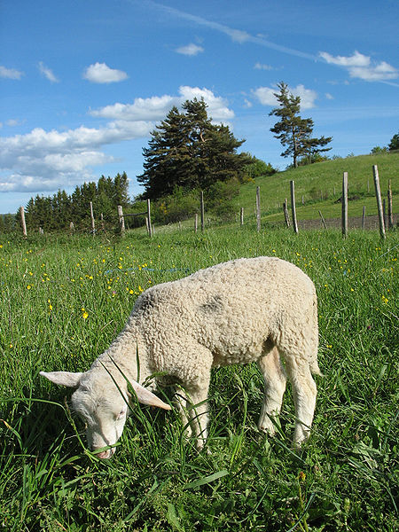

Сельскохозяйственные животные
Сельскохозяйственные животные — содержащиеся человеком для получения продуктов питания (мясо, молоко, яйца),
жира, сырья производства (шерсть, мех, пух), щетины, кожи, костей, перьев, а также выполняющие транспортные и
рабочие функции (тяговые, вьючные); выведены при помощи селекции — отбора желаемых качеств и характеристик
представителей дикой природы, издревле отловленных и приручённых
птиц и зверей.
Сельскохозяйственные животные, чаще всего, содержатся в специализированных нежилых помещениях
(стойло, загон, сарай, конюшня, свинарник, коровник, крольчатник, животноводческое помещение,
ферма, хлев, скотный двор, птичник, пасека и так далее).

Определение
Словари и законодательные акты определяют, что к сельскохозяйственным животным относятся:
- скот,
- ценные пушные звери,
- кролики,
- птица
- пчёлы.
Скот (скотина), в свою очередь — «четвероногие домашние сельскохозяйственные животные».
Более подробно расшифровывает это понятие Даль —
«общее название домашних, хозяйственных животных: лошадь, корова, верблюд, овца, коза, олень и прочие. Но, как встарь,
так и поныне, большей частью, волы и коровы»
.
Биологическая классификация
Сельскохозяйственные животные входят в общую биологическую классификацию наряду со своими дикими родственниками и в то же время делятся по породам.
Список сельскохозяйственных животных
- Млекопитающие
- Парнокопытные
- Крупный рогатый скот
- коровы, буйволы, бантенги, гаялы, яки, бизоны,а также их гибриды
- Мелкий рогатый скот
- свиньи
- северные олени
- верблюды: дромедар (одногорбый) и бактриан (двугорбый); ламы, альпака
- Непарнокопытные
- лошади, ослы, а также их гибриды: мулы и лошаки
- Зайцеобразные
- Грызуны
- нутрии
- шиншиллы
- моские свинки
- Хищные
- соболя, европейские норки, хорьки (фретки)
- собаки, лисицы
- Птицы
- Курообразные
- куры, индейки, фазаны, перепела, павлины
- цесарки
- Гусеобразные
- гуси
- утки, мускусные утки
- Голубеобразные
- голуби (мясные породы)
- цесарки
- Страусообразные